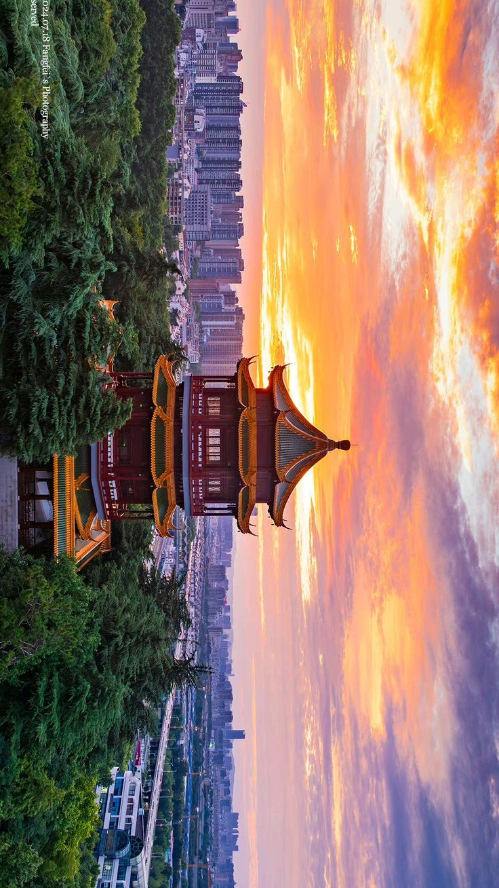

Sejarah

Sejarah Tiongkok adalah perjalanan salah satu peradaban tertua di dunia
yang berakar di lembah Sungai Kuning dan dipersatukan pertama kali oleh
Kaisar Qin Shi Huang pada 221 SM melalui Dinasti Qin. Setelah ribuan tahun
dipimpin oleh berbagai kekaisaran besar—seperti Han, Tang, hingga Qing—sistem
monarki runtuh pada 1912 melalui Revolusi Xinhai dan berganti menjadi bentuk republik.
Pasca-Perang Saudara, Mao Zedong memproklamasikan berdirinya Republik Rakyat Tiongkok (RRT)
pada 1 Oktober 1949, yang kemudian berkembang pesat menjadi kekuatan ekonomi dunia setelah
reformasi Deng Xiaoping pada akhir 1970-an.
Sejarah Tiongkok membuktikan bahwa sebuah bangsa dapat terus bertahan dan
bangkit melintasi berbagai era, mulai dari ribuan tahun masa kekaisaran,
masa transisi republik, hingga kini berhasil bertransformasi menjadi salah satu
pusat peradaban dan ekonomi terkuat di dunia modern.
Geografis

Secara geografis, Tiongkok merupakan negara terbesar di Asia Timur dengan
wilayah yang membentang dari pegunungan tinggi di bagian barat hingga dataran
rendah dan garis pantai yang luas di bagian timur. Keanekaragaman bentang alamnya—mulai
dari Pegunungan Himalaya dan Gurun Gobi hingga lembah subur Sungai Yangtze dan Sungai Kuning—menjadi
faktor utama yang mendukung besarnya populasi, memengaruhi pola pemukiman, serta mendorong
pesatnya perekonomian dan perdagangan Tiongkok sejak zaman kuno hingga era modern.
Keberagaman geografis tersebut pada akhirnya membentuk benteng alam yang melindunginya
sekaligus menyediakan sumber daya melimpah, sehingga Tiongkok mampu mengembangkan
kebudayaannya secara mandiri dan tumbuh menjadi pusat peradaban yang sangat berpengaruh
di kawasan Asia Timur.
Wisata
Kekayaan geografis dan nilai sejarah yang melimpah tersebut menjadikan Tiongkok sebagai salah
satu destinasi wisata paling populer di dunia, dengan daya tarik utama berupa situs warisan
dunia seperti Tembok Besar, Kota Terlarang (Forbidden City), dan Tentara Terakota. Selain
peninggalan sejarah kuno, Tiongkok juga menawarkan pesona panorama alam spektakuler di
Zhangjiajie dan Guilin, yang berpadu harmonis dengan kemegahan kota-kota modern seperti
Shanghai dan Beijing.
Tembok Besar

Sebagai salah satu peninggalan bersejarah paling ikonik di Tiongkok, Tembok Besar
menjadi tujuan wisata utama yang menyajikan kemegahan arsitektur kuno membentang melintasi
pegunungan yang indah. Mengunjungi situs ini—seperti area Badaling atau Mutianyu yang
terkenal—memberikan pengalaman luar biasa bagi wisatawan untuk berjalan di atas benteng
ribuan tahun sekaligus menikmati panorama alam Tiongkok yang sangat spektakuler.
Kota Terlarang (Forbidden City)

Kota Terlarang (Forbidden City) di Beijing menjadi destinasi wisata sejarah yang
sangat memukau karena menyajikan kemegahan istana kekaisaran terbesar di dunia dengan
arsitektur tradisional Tiongkok yang anggun. Menyusuri pelataran luas dan ribuan ruangan
di kompleks istana ini membawa wisatawan merasakan kembali keagungan masa pemerintahan
Dinasti Ming dan Qing di tengah lanskap kota modern Tiongkok.